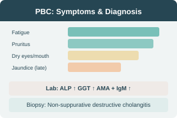

PBC — Clinical Findings
Symptoms & Signs
| Symptom | Frequency |
|---|---|
| Fatigue | Very common |
| Pruritus | Very common |
| Dry eyes / Dry mouth | Common (Sjögren overlap) |
| RUQ discomfort | Common |
| Jaundice | Late finding |
| Ascites | Late (portal HTN) |
| GI bleeding / Encephalopathy | End-stage |
Diagnostic Approach
Laboratory
Liver Biopsy
